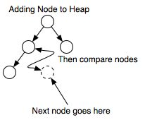

Heap Implementation
Introduction
A heap is a partially sorted binary tree. Although a heap is not completely in order, it conforms to a sorting principle: every node has a value less (for the sake of simplicity, we will assume that all orderings are from least to greatest) than either of its children. Additionally, a heap is a "complete tree" -- a complete tree is one in which there are no gaps between leaves. For instance, a tree with a root node that has only one child must have its child as the left node. More precisely, a complete tree is one that has every level filled in before adding a node to the next level, and one that has the nodes in a given level filled in from left to right, with no breaks.
Why use a heap?
A heap can be thought of as a priority queue; the most important node will always be at the top, and when removed, its replacement will be the most important. This can be useful when coding algorithms that require certain things to processed in a complete order, but when you don't want to perform a full sort or need to know anything about the rest of the nodes. For instance, a well-known algorithm for finding the shortest distance between nodes in a graph, Dijkstra's Algorithm, can be optimized by using a priority queue.
Heaps can also be used to sort data. A heap sort is O(nlogn) efficiency, though it is not the fastest possible sorting algorithm. Check out this tutorial heap sort for more information related to heap sort.
How do you implement a heap?
Although the concept of a heap is simple, the actual implementation can appear tricky. How do you remove the root node and still ensure that it is eventually replaced by the correct node? How do you add a new node to a heap and ensure that it is moved into the proper spot?
The answers to these questions are more straight forward than meets the eye, but to understand the process, let's first take a look at two operations that are used for adding and removing nodes from a heap: upheaping and downheaping.

Upheap:
The upheap process is used to add a node to a heap. When you upheap a node, you compare its value to its parent node; if its value is less than its parent node, then you switch the two nodes and continue the process. Otherwise the condition is met that the parent node is less than the child node, and so you can stop the process. Once you find a parent node that is less than the node being upheaped, you know that the heap is correct--the node being upheaped is greater than its parent, and its parent is greater than its own parent, all the way up to the root. We only use only one pointer called top.Downheap:
The downheap process is similar to the upheaping process. When you downheap a node, you compare its value with its two children. If the node is less than both of its children, it remains in place; otherwise, if it is greater than one or both of its children, then you switch it with the child of lowest value, thereby ensuring that of the three nodes being compared, the new parent node is lowest. Of course, you cannot be assured that the node being downheaped is in its proper position -- it may be greater than one or both of its new children; the downheap process must be repeated until the node is less than both of its children.When you add a new node to a heap, you add it to the rightmost unoccupied leaf on the lowest level. Then you upheap that node until it has reached its proper position. In this way, the heap's order is maintained and the heap remains a complete tree. Removing the root node from a heap is almost as simple: when you take the node out of the tree, you replace it with "last" node in the tree: the node on the last level and rightmost on that level. Once the top node has been replaced, you downheap the node that was moved until it reaches its proper position. As usual, the result will be a proper heap, as it will be complete, and even if the node in the last position happens to be the greatest node in the entire heap, it will do no worse than end up back where it started.
Algorithm
Heapify
for i = n/2:1, sink(a,i,n)
→ invariant: a[1,n] in heap order
Sortdown
for i = 1:n,swap a[1,n-i+1]
sink(a,1,n-i)
→ invariant: a[n-i+1,n] in final position
end
Sink from i in a[1..n]
function sink(a,i,n):
# {lc,rc,mc} = {left,right,max} child index
lc = 2*i
if lc > n, return # no children
rc = lc + 1
mc = (rc > n) ? lc : (a[lc] > a[rc]) ? lc : rc
if a[i] >= a[mc], return # heap ordered
swap a[i,mc]
sink(a,mc,n)
Efficiency of a heap
Whenever you work with a heap, most of the time taken by the algorithm will be in upheaping and downheaping. As it happens, the maximum number of levels of a complete tree is log(n)+1, where n is the number of nodes in the tree. Because upheap or downheap moves an element from one level to another, the order of adding to or removing from a heap is O(logn), as you can make switches only log(n) times, or one less time than the number of levels in the tree (consider that a two level tree can have only one switch).
Application
- The first is as a way of implementing a special kind of queue, called a priority queue. Recall that in an ordinary queue, elements are added at one end of the queue and removed from the other end, so that the elements are removed in the same order they are added (FIFO).
In a priority queue, each element has a priority; when an element is removed it must be the element on the queue with the highest priority.
A very efficient way to implement a priority queue is with a heap ordered by priority - each node is higher priority than everything below it. The highest priority element, then, is at the top of the heap. We've just seen that the top element can be retrieved with a single delete operation - O(logN) - and that inserting a new element is also O(logN). - The second application is sorting. HeapSort uses the heap data structure to sort values in exactly the same way as TreeSort used a binary search tree. To sort an array, or list, containing N values there are two steps:
Run Code